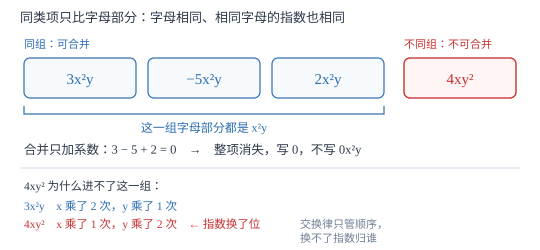

同类项与合并同类项
同类项只看字母部分：字母相同、相同字母的指数也相同。合并时只把系数相加，字母部分原样不动——依据是分配律。
| 所属主题 | 整式的加减 |
|---|---|
| 所属模块 | 代数 |
| 课标学段 | 第四学段（7~9 年级） |
| 前置知识 | 单项式、多项式与整式 |
| 核心素养 | 运算能力推理能力 |
教材定位
人民教育出版社《人教版（2024版）义务教育教科书·数学》
七年级上册第4章 整式的加减4.2 整式的加法与减法
对应七上 4.2 整式的加法与减法第 1 课时（合并同类项）。教材以港珠澳大桥路程之和 72a+120a 引出；本篇用具体数值反证「不同类项不能合并」，并把「字母顺序无关」的依据落到交换律上。
说明
所含字母相同，并且相同字母的指数也相同的项，叫做同类项。所有常数项都是同类项，5 与 -3 是一组。判断同类项与系数大小无关，也与字母的书写顺序无关：-7xy 与 yx 是同类项，因为乘法交换律保证 xy=yx。
把多项式中的同类项合并成一项，叫做合并同类项。法则是：所得项的系数是合并前各同类项的系数的和，字母连同它的指数不变。例如 3x^2y-5x^2y+2x^2y=(3-5+2)x^2y=0。
依据是乘法分配律的逆用：ma+na=(m+n)a。式中的 a 既可以是单个字母，也可以是 x^2y 这样一整块字母积——因为分配律对一切数成立，而字母代表数，把「数」换成「式」，法则照样成立。这也是「数式通性」最直接的一处体现。
使用场景
判断同类项的题常给几组让人挑：3x^2y 与 -x^2y、2ab 与 2abc、5 与 -3、x^2 与 x^3，要求指出哪几组能合并。挑的标准只有两条，与系数长什么样毫无关系。
合并同类项是整式加减、解一元一次方程、函数化简的公共步骤。凡是题目要求「化简」「化成最简形式」，第一步都是找同类项；只要式子还残留可合并的项，就不算做完。
注意点
只比字母部分，不比系数。3x^2y 与 -100x^2y 是同类项，系数差得再远也能合并。
指数必须逐一对上。x^2 与 x^3 不是同类项（同字母、指数不同）；3x^2y 与 3xy^2 也不是（x、y 的指数互换了位置）。
常数项也是同类项，可以互相合并：2a+5-8 中的 5 与 -8 合并为 -3。合并后系数为 0 时整项消失，写成 0 就行，不要留 0x^2y。
证明

图 1：先把项按字母部分分堆，只在堆内合并；长得像但指数换了位的那一项必须留在外面
证明
结论 1合并同类项的依据是乘法分配律，不是一条独立的新规定。
分配律说 a(b+c)=ab+ac，把它反过来写就是 ab+ac=a(b+c)，对任意数成立。取 a 为字母部分（如 x^2y）、m 与 n 为系数：mx^2y+nx^2y=(m+n)x^2y。因为字母代表数，这一步只是把「数」换成了「式」，法则不受影响。3x^2y+2x^2y 就是 (3+2)x^2y=5x^2y。这也解释了为什么合并时字母与指数不动：被提出来的正是那一整块字母部分。
关键一步依据是分配律的逆用；字母只是数的替身，数的运算律可以完整搬到式子上。
结论 2字母部分不同的两项不能合并。
若 2a+3b 能合并成某个单项式，那么这个等式必须对任意的 a、b 都成立。取 a=1、b=10：原式 =2+30=32。若合并成 5ab，得 5× 1× 10=50；若合并成 5(a+b)，得 55；若合并成 5，得 5。三种常见的错误合并都对不上 32。再取 a=2、b=1：原式 =7，5ab=10，5(a+b)=15，仍然不等。两组值合起来否定了「能合并」这个说法，所以 2a+3b 已经是最简形式。
关键一步依据是恒等变形必须对一切取值成立；代入具体的数只能否定「能合并」，不能肯定它。
结论 3判断同类项与字母的书写顺序无关。
乘法交换律保证 xy=yx：取 x=2、y=3，两边都等于 6。既然 -7xy 与 yx 的字母部分对任意取值都完全相同，它们之间就只差一个系数，符合「字母部分相同」的要求。所以 -7xy 与 5yx 是同类项，合并得 -2xy。但要注意交换律只管因数的位置，不管指数归谁：x^2y 与 xy^2 交换字母顺序后是 yx^2 与 xy^2，前者含两个 x、后者含两个 y，字母部分依然不同。
关键一步依据是乘法交换律；它只交换相乘的顺序，不会把指数从一个字母挪到另一个字母上。
动手实验
取 a=2、b=3 列一张小表验算。第一行：2a+3a=4+6=10，与 5a=10 相等，说明同类项能合并。第二行：2a+3b=4+9=13，与 5ab=30、5(a+b)=25 都不等，说明不同类项合并不了。第三行：3a^2b-5a^2b+2a^2b=36-60+24=0，与 (3-5+2)a^2b=0 相等，说明系数和为 0 时整项归零。三行合起来是一条判据：能合并的，合并前后数值恒等；不能合并的，任何「合并」都会立刻算错。
解题思路
判断同类项分两步查，顺序固定。第一步查字母集合是否完全相同（不看顺序，xy 与 yx 算同一组）；第二步查同一个字母的指数是否逐一相等。两条都过才是同类项。口诀：字母同、指数同，缺一不可。
合并同类项按三步做。第一步做记号：给每组同类项标同一种记号（划线、圈圈都可以），这一步专治漏项；第二步对每组用分配律把系数相加，字母部分照抄；第三步回头检查结果里还有没有同类项，有就再合一次，直到一组都找不到为止。
系数是负数或分数时，先把符号放进括号再相加：3x-5x 写成 (3-5)x，不要心算跳步；1/2a-2/3a 写成 ≤ft(1/2-2/3)a=-1/6a。合并后系数为 1 或 -1 时照常省略：1\cdot xy 写 xy，-1\cdot xy 写 -xy。
按场景的例题
例 1（场景：销售与利润） 两种商品的盈亏
某店卖出甲商品 x 件，每件盈利 5 元；卖出乙商品 x 件，每件亏损 2 元。把总利润写成多项式并化简；x=40 时总利润是多少元？
解：总利润 =5x+(-2x)=(5-2)x=3x。x=40 时 3× 40=120 元。验算：甲盈利 5× 40=200 元，乙亏损 2× 40=80 元，相抵得 120 元，与化简结果一致。两项的字母部分都是 x，属于同类项；亏损项的系数是 -2，负号必须进括号参与运算。
答：3x；总利润 120 元。
例 2（场景：生活优化） 装修材料费
装修时买地板，单价 a 元/平方米，共 12 平方米；买踢脚线，单价 b 元/米，共 12 米。把总费用写成多项式，化简后说明它表示什么。
解：总费用 =12a+12b=12(a+b)。12a 与 12b 的字母不同，不是同类项，不能合并成一项；但两项的系数相同，可以用分配律提取公因数 12，读作「12 乘上（地板单价与踢脚线单价之和）」，含义是「两种材料的数量相同时，总费用等于数量乘单价之和」。这里正好看到合并同类项的反方向操作：合并是「系数相加、字母不动」，提公因式是「字母分开、系数提出」。
答：12a+12b=12(a+b)，不能合并成一项，只能提取公因数。
例 3（场景：竞技与游戏） 比赛积分
某比赛选手的总分由三部分组成：答题得分 5x、抢答得分 3x、违规扣分 -2x。化简总得分；x=10 时总分是多少？
解：5x+3x-2x=(5+3-2)x=6x，x=10 时得 60 分。验算：50+30-20=60，与化简结果一致。三项的字母部分都是 x，可以合并；假若其中一项写成 x^2，它就与另外两项不是同类项，只能留在式子里单独成项。
答：6x；总分 60 分。
例 4（场景：数据调查） 捐书统计
某班统计捐书：男生 a 人每人捐 3 本，女生 a 人每人捐 2 本，另有两位老师各捐 5 本。把总本数写成多项式并化简。
解：总本数 =3a+2a+5+5=(3+2)a+(5+5)=5a+10。含 a 的两项合并成 5a；两个 5 是常数项，也互为同类项，合并成 10。5a 与 10 不能再合并——一个是含字母的项，一个是常数项，字母部分根本不同。
答：5a+10。
常用推论
合并同类项只能减少项数，不能改变多项式的次数：3x^2+2x^2 合并成 5x^2，仍是二次。
若合并后含字母的项全部消失（如 2x-2x+7），结果只剩常数，这个式子的值与字母取值无关——这类结构是「与取值无关」题的原型。
提取公因式是合并的逆过程：ma+na 与 (m+n)a 是同一个式子的两种写法。因式分解走的正是反方向。
易错点
错认为 3x^2y 与 3xy^2 是同类项，理由是「都是 3 次、字母也相同」。
为什么错x、y 的指数位置互换了：前者是 x 二次、y 一次，后者是 x 一次、y 二次。
正确两者不是同类项，不能合并；次数相同只是巧合。
错把 2a+3b 合并成 5ab 或 5(a+b)。
为什么错字母部分不同，分配律用不上；取 a=1、b=10 验算，原式 =2+30=32，与 50、55 都不等。
正确2a+3b 已是最简形式，保持原样。
错把 3x^2y-5x^2y+2x^2y 合并后写成 0x^2y。
为什么错系数和为 0 时整项就是 0，写 0x^2y 说明化简没做完。
正确结果是 0，该项直接消失，不必保留字母部分。
直观理解
同类项就像同一种水果：3 个苹果加 2 个苹果是 5 个苹果，但 3 个苹果加 2 个梨不会变成 5 个「苹果梨」。x^2y 与 xy^2 看着都像「苹果梨」，其实一个是「两个 x 一个 y」、一个是「一个 x 两个 y」，压根不是同一种货。